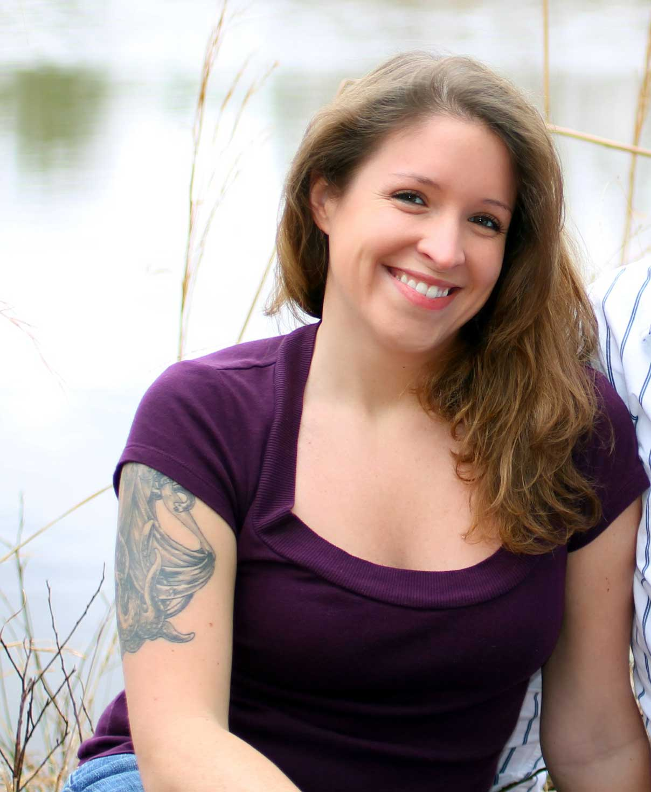

Hello, I’m Brianna.
My home is Hattiesburg, Mississippi.
My home is Hattiesburg, Mississippi.
I’m a military veteran, work-at-home mom, and aspiring web developer. I dove into learning about building websites after having two failed attempts of having one designed/developed for my by someone else. I've deployed to Iraq once, met my (now) husband in Kuwait, and we have two kids. I want to learn many coding languages and become a full stack developer in the future.
I’ve been a virtual assistant for the past 5 years and have slowly wittled down my offerings to mainly WordPress & SquareSpace setups and other tech offerings. I want to wittle it down more and just be a front end (and eventually) full stack developer.
I want to become a full stack developer that works remotely. To do that I want to increase my knowledge, skills and abilities in:
I would love to work remotely for a web design firm (or small agency doing massive work) helping clients create an impressive online presence.
Here a few things that I'm interested in outside of coding: